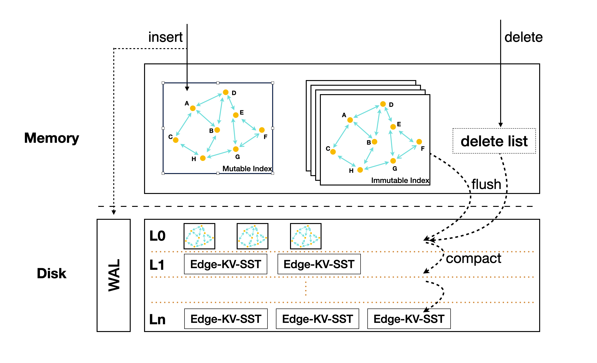

Vecrocks Design
1. Overview

1.1 Algorithm
Use same FreshVamana algorithm from FreshDiskANN
2. Operations
2.1 Insert & Delete Procedure
- insert into mutable FreshVamana index memtable
- convert to immutable when reach the threshold.
- flush to L0 file, which is same structure as immutable index.
- StreamingMerge L0 file, delete list to Ln(n >= 1) file.
2.2 Search
- consturct a KNN search queue
- search from memtable
- load l0 to disk and search
- search from all sst file using graph based search
3. Data Structure
3.1 In Memory
raw data:
|id|vector|
|id|vector|
|id|vector|
...
|id|vector|
...
index:
graph relation which can be std::vector<std::vector<uint32_t>> _final_graph;
3.1.1 raw data & index
3.1.2 DeleteListFilter
3.2 On Disk
index:
|src1_dst1|is_valid/id info|
|src1_dst2|is_valid/id info|
|src1_dst3|is_valid/id info|
...
|src2_dst1|is_valid/id info|
...
raw data:
|id|vector|
|id|vector|
|id|vector|
...
|id|vector|
...
Last modified on 2023-08-01